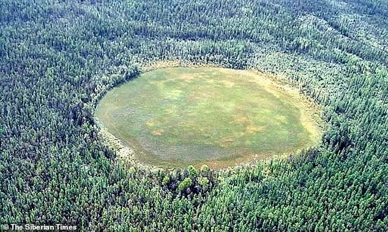

The Tunguska Event
The Sky Catches Fire: On the morning of June 30, 1908, the remote, sparsely populated taiga near the Podkamennaya Tunguska River in Siberia experienced a cataclysmic event. A blinding light streaked across the sky, followed by an explosion of unimaginable power. The blast generated a shockwave so immense that it knocked people off their feet and shattered windows hundreds of kilometers away. Seismic and atmospheric shockwaves were recorded by instruments across Eurasia, and the night skies over Europe and Asia were reportedly illuminated for days afterward due to light passing through high-altitude ice particles generated by the explosion.

The Missing Crater: For years, the extreme remoteness of the region and the political turmoil in Russia delayed a proper scientific expedition. When researchers finally reached the epicenter in 1927, they found a scene of profound devastation: an estimated 80 million trees lay completely flattened across 2,000 square kilometers (about 770 square miles) of forest, arranged in a massive radial butterfly pattern. Yet, defying all expectations, there was no impact crater. The modern, widely accepted scientific consensus is that the devastation was caused by an "airburst." A massive meteor or comet fragment, roughly 50 to 60 meters across, entered Earth's atmosphere at a tremendous speed and exploded about 5 to 10 kilometers above the surface due to extreme heat and pressure, releasing energy equivalent to 10-15 megatons of TNT.
Key Facts
Date: June 30, 1908
Location: Podkamennaya Tunguska River, Siberia, Russia
Casualties: No officially recorded human casualties due to the extreme remoteness of the area, though massive environmental devastation occurred (2,000 km² of forest completely flattened); shockwaves and atmospheric disturbances recorded globally.
Cause: A mid-air explosion (airburst) of a large meteor or comet fragment entering the Earth's atmosphere.
Lesson: The Tunguska event remains the largest impact event on Earth in recorded history. It serves as a stark and sobering reminder of our planet's vulnerability to Near-Earth Objects (NEOs). The fact that a cosmic body could wipe out an area the size of a major metropolis without ever striking the ground highlights the invisible, astronomical risks we face. It is a driving force behind modern astronomical monitoring programs and planetary defense initiatives aimed at detecting and potentially diverting future asteroid threats.